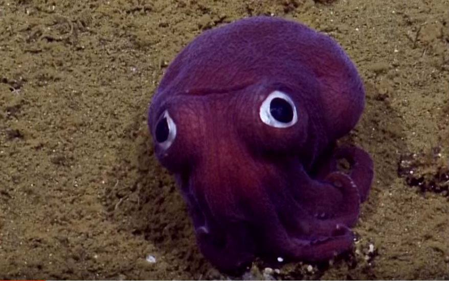

Descubra como a transição visual suave molda nossa percepção óptica, cognitiva e cinematográfica.
Testar SimuladorConsiste no surgimento gradual de um elemento visual, passando de uma imagem escura ou transparente para uma imagem completamente visível.
É o processo contrário: a imagem vai desaparecendo gradualmente até ficar totalmente transparente ou escura.
O efeito de transições visuais está relacionado à forma como o sistema visual percebe mudanças de luminosidade e movimento.
O sistema visual humano precisa se adaptar a diferentes níveis de luminosidade. Mudanças graduais podem tornar uma transição visual mais suave para o espectador.
No cinema e no audiovisual, fades podem ser utilizados para indicar transições, passagem de tempo, início ou encerramento de uma cena.
Ajuste a opacidade ou use os botões para testar o comportamento do Fade In e Fade Out.

Fades podem marcar mudanças de cena, passagem de tempo ou encerramento de uma sequência.
Podem ser utilizados em menus, janelas, elementos de interface e transições de páginas.
Transições graduais podem ser utilizadas para combinar imagens e criar efeitos visuais.